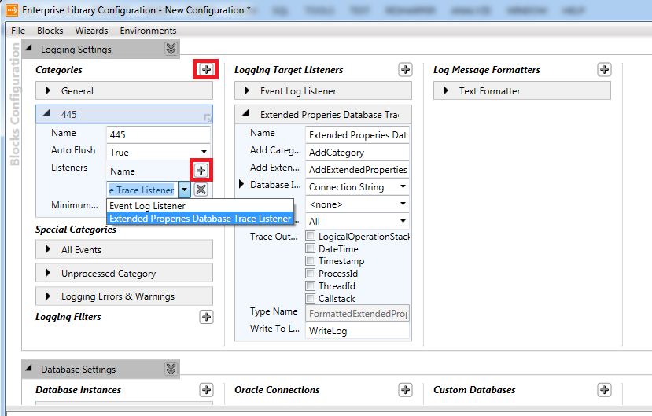

Introduction
For me, logging always was a necessary evil. It was error prone and the implementation differed from project to project because I was never satisfied with the end result.
Then I learned about the logging features in the enterprise library. I was immediately sold.
By writing the loggings to the database, we gain the advantages of the database engine which is a proven piece of technology.
On top of that, we can use the query language to search for the logging entries we are interested in.
The database trace listener in the enterprise library lets us log with limited effort to the database. The only downside is that out of box it does not support the logging of the added properties in the log entry.
For me, this is a major let down because you can do some cool things with these properties. I, for one, add key information to a log entry in the properties so that we can group log entries together.
But not all is lost because we can always create our own logging tracer in the enterprise library.
I have made a custom database logging tracer to log the properties to a SQL Server database.
Background
I have added 2 extra tables to the original once from the database logging.
Following tables were added:
ExtendedProperty: This is the master table for all the properties that will be added. So if you add multiple times the properties articleId to the different loggings, than there will only be one entry in the extended property table.ExtendedPropertiesForLog: This is the table that holds the properties and their values for a given log entry.
To pass along the dictionary in the logentry to the tables, I have created a new type NamedExtendedPropertiesTableType and a stored procedure AddExtendedPropertiesByName.
You can always run the LoggingDatabase.sql script in the EnterpriseLibrary5AddIns.zip which will create all the required database objects under the database named "Logging".
Requirements
You must add the following references to your project:
Microsoft.Practices.EnterpriseLibrary.CommonMicrosoft.Practices.EnterpriseLibrary.Logging
You must add the following DLL files in the application root directory (or add them to the GAC):
- Microsoft.Practices.EnterpriseLibrary.Unity
- Microsoft.Practices.EnterpriseLibrary.Unity.Interception
- Microsoft.Practices.EnterpriseLibrary.ServiceLocation
- Microsoft.Practices.EnterpriseLibrary.Logging
- Microsoft.Practices.EnterpriseLibrary.Logging.Database.Custom
- Microsoft.Practices.EnterpriseLibrary.Data
- Microsoft.Practices.EnterpriseLibrary.Common
A brief description of how to write a log file. This is a quick recap of how to write a log file with enterprise library framework
Add Following References to the Class
using Microsoft.Practices.EnterpriseLibrary.Logging;
Create a Log Entry and Write It with the Write Logger
var keyProperiest = new Dictionary<string, object>();
keyProperiest["Barcode"] = "15151";
keyProperiest["MachineId"] = "324";
var newLogEntry = new LogEntry("TestMessage to log", TestCategorie,
1, 1, TraceEventType.Information, "Test logging", keyProperiest);
var logWriterFactory = new LogWriterFactory();
LogWriter logWriter = logWriterFactory.Create();
logWriter.Write(newLogEntry);
Configure the Enterprise Library Block Using the Included Enterprise Library Configuration Tool
The Microsoft.Practices.EnterpriseLibrary.Logging.Database.Custom.dll must be in the same directory as the configuration tool.
Add the logging block to the application configuration:
Add the extended properties database trace listener:
Configure the database connection string:
Add the necessary categories:

Save the configuration. You can save it as your app.config so that it will automatically load in the configurations.
And you are ready to log.
Attachment
In the attachment is the source code of the custom database listener as well as the SQL scripts that are needed to create the logging database.


 Submit an article or tip
Submit an article or tip